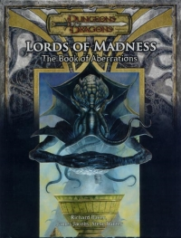

“Lords of Madness” on the
Shelf of Many Books

Lords of Madness: The Book of Aberrations
D&D 3.5
(3e)
Year
: 2005
Lords of Madness
on Amazon
Lords of Madness
on TSR Info
Known monsters from the book:
Alhoon
Average Psurlon
Beholderkin
Cildabrin
Director
Elder Brain
Elder Eidolon
Elder Psurlon
Embrac
Eye of the Deep
Gas Spore
Giant Psurlon
Gibbering Mouther
Half-Farspawn
Hive Mother
Hound of the Gloom
Illithidae
Kigrid
Mind Flayer Vampire
Overseer
Pseudonatural Creature
Pseudonatural Hippogriff
Psionic Elder Brain
Psionic Ulitharid
Psurlon
Saltor
Shaboath
Shadow Choker
Shadow Creature
Shadowcloak Elder Cloaker
Silthilar
Spectator
Ulitharid
Urophion
Zeugalak